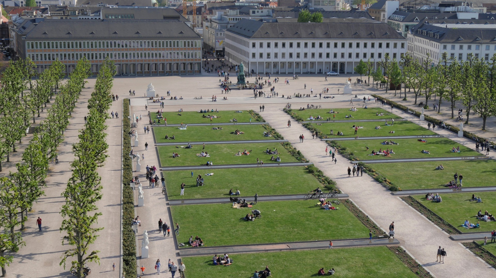

Ansichten von Karlsruhe
Die folgende Fotogallerie ist mit dem Carousel-Element von Bootstrap 5 realisiert. Klicken Sie auf die Pfeile am linken und am rechten Rand des aktuellen Fotos, um die anderen Motive zu sehen.

Foto 3257297 von Pixabay-Nutzer maxmann, zugeschnitten
Foto 4400662 von Pixabay-Nutzer Mylene2401

Foto 2521891 von Pixabay-Nutzer dlohner, Höhe um 2px gestretcht